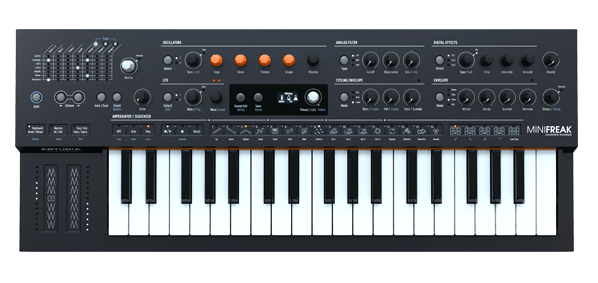
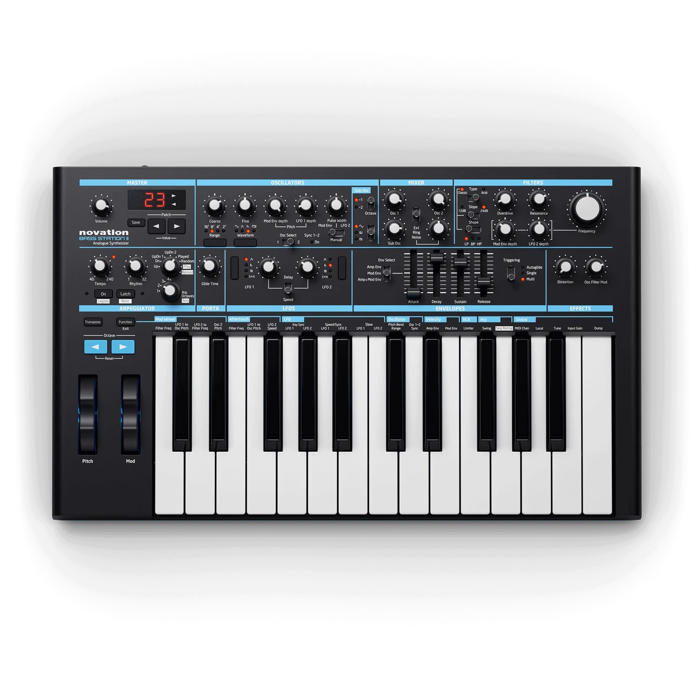

СИНТЕЗАТОРKorg
Гибридный синтезатор с аналоговым трактом и цифровым Multi Engine
86 990 ₽
Аналоговые, цифровые и гибридные инструменты для студии и сцены.
Гибридный синтезатор с аналоговым трактом и цифровым Multi Engine


Аналоговый синтезатор для баса и лидов с арпеджиатором
Вопросы об аппаратуре, подключении и заявках.
Со станций «Деловой центр» и «Москва-Сити» можно выйти прямо в торговый центр.
Подключите линейный аудиовыход синтезатора к линейному входу аудиоинтерфейса и выберите этот вход на дорожке записи. Для передачи нот можно использовать MIDI, если инструмент поддерживает нужное подключение.
Оставлены программные модели конкретных аппаратных устройств или их алгоритмов. В каждой карточке указано, какая аппаратура послужила прототипом.
Добавьте синтезатор в корзину и укажите город в форме заявки. Сайт рассчитает стоимость товаров. Оплата и отправка заявки на сайте недоступны.
Если ваша модель принимает MIDI, в FL Studio можно отправлять ей ноты через подходящий MIDI-порт. Для записи звука используйте отдельное аудиоподключение либо USB-аудио, если инструмент его поддерживает.
Откройте каталог и отметьте до трёх моделей кнопкой «Сравнить». В таблице появятся клавиатура, полифония, тип звукового движка и цена.